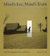
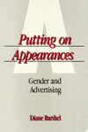

| 
|
Art
for The Masses
A Racical Magazine and Its Graphics, 1911-1917
Zurier, Rebecca, and Leslie Fishbein The first study of
the art in The Masses and the changing role that pictures
played in the magazine’s political message
New in Paperback!
240 pp • 9.25x12 • Fall 1987
paper 0-87722-670-9
EAN 978-0-87722-670-3 |
|
|
Atheism
A Philosophical Justification
Martin, Michael Logical reasons for being an atheist
254 pp • 6x9 • Fall 1989
paper 0-87722-943-0
EAN 978-0-87722-943-8
cloth 0-87722-642-3
EAN 978-0-87722-642-0
|
|
|
The
Atlas of Pennsylvania
Cuff, David J., William J. Young, Edward K. Muller, Wilbur Zelinsky,
and Ronald F. Abler, eds. A splendid portrait of Pennsylvania
and its people
304 pp • 13.25x15.5 • Fall 1989
cloth 0-87722-618-0
EAN 978-0-87722-618-5
|
| 
|
Black
Women Writing Autobiography
A Tradition Within a Tradition
Braxton, Joanne M. Argues for a corrective to both black
and feminist literary criticism
240 pp • Fall 1989
paper 0-87722-803-5
EAN 9780-87722-803-5
cloth 0-87722-639-3
EAN 978-0-87722-639-0
|
|
|
The
Caring Relationship
Elderly People and Their Families
Qureshi, Hazel, and Alan Walker Interviews with 300 elderly
people, along with family members who provide assistance
287 pp • Fall 1989
cloth 0-87722-663-6
EAN 978-0-87722-663-5
|
|
|
The
Christ Child Goes to Court
Swanson, Wayne R. The judicial history and implications
of Lynch v. Donnelly
284 pp • Fall 1989
paper 0-87722-958-9
EAN 978-0-87722-958-2
cloth 0-87722-638-5
EAN 978-0-87722-638-3
|
| 
|
Coming
of Age in Buffalo
Youth and Authority in the Postwar Era
Graebner, William Defining Youth Culture in postwar era
New York
200 pp • Fall 1989
paper 1-56639-197-0
EAN 978-1-56639-197-9
cloth 0-87722-629-6
EAN 978-0-87722-629-1
|
|
|
Communities
in Economic Crisis
Appalachia and the South
Gaventa, John, Barbara Ellen Smith, and Alex Willingham, eds.
Resisting injustice in Appalachia and empowering residents to build
democratic alternatives to the heritage of enduring poverty
336 pp • Fall 1989
paper 0-87722-650-4
EAN 978-0-87722-650-5
cloth 0-87722-649-0
EAN 978-0-87722-649-9
|
|
|
Computer
Applications in the Social Sciences
Brent, Jr., Edward, and Ronald E. Anderson A comprehensive
survey of the current and prospective uses of computers in the social
sciences
384 pp • 6x9 • Fall 1989
cloth 0-87722-666-0
EAN 978-0-87722-666-6
|
|
|
Concise
Historical Atlas of Pennsylvania
Muller, Edward K. ed. Explores the geographical dimensions
of Pennsylvania’s past
48 pp • Fall 1989
paper 0-87722-672-5
EAN 978-0-87722-672-7
|
| 
|
Dilemmas
of the American Self
Hewitt, John P. A theory about what it means to be an individual
within contemporary American society
304 pp • Fall 1989
paper 0-87722-837-X
EAN 978-0-87722-837-0
cloth 0-87722-656-3
EAN 978-0-87722-656-7
|
|
|
Doing
Comparable Worth
Gender, Class, and Pay Equity
Acker, Joan The study of a large comparable worth project
and of how gender and class dynamics influenced its outcome
272 pp • 6x9 • Fall 1989
paper 0-87722-834-5
EAN 978-0-87722-834-9
cloth 0-87722-621-0
EAN 978-0-87722-621-5
|
| 
|
Domesticity
and Dirt
Housewives and Domestic Servants in the United States, 1920-1945
Palmer, Phyllis Examining the cultual norms of women after
Suffrage to define labor based on color
248 pp • Fall 1989
paper 0-87722-901-5
EAN 978-0-87722-901-8
cloth 0-87722-585-0
EAN 978-0-87722-585-0
|
|
|
The
Elements of Metaphysics
Carter, William R. A concise explanation and discussion
of the branch of philosophy that concerns the nature of the world
we inhabit
208 pp • Fall 1989
cloth 0-87722-619-9
EAN 978-0-87722-619-2
|
| 
|
Environmental
Ethics
Duties to and Values in the Natural World
Rolston, III, Holmes A systematic account of values carried
by the natural world
New in Paperback!
408 pp • Fall 1987
paper 0-87722-628-8
EAN 978-0-87722-628-4
|
|
|
Food
and Evolution
Toward a Theory of Human Food Habits
Harris, Marvin, and Eric B. Ross, eds. An unprecedented
interdisciplinary effort suggests that there is a systematic theory
behind why humans eat what they eat
New in Paperback!
640 pp • Spring 1987
paper 0-87722-668-7
EAN 978-0-87722-668-0
|
| 
|
The
Forms of Power
From Domination to Transformation
Wartenberg, Thomas E. A field theory of power that rejects
many of the reigning assumptions made about power
320 pp • Fall 1989
paper 0-87722-905-8
EAN 978-0-87722-905-6
cloth 0-87722-648-2
EAN 978-0-87722-648-2
|
| 
|
Freedom
at Risk
Secrecy, Censorship, and Repression in the 1980s
Curry, Richard O., ed. Indictment of the Reagan Administration's
belief about the requirements of national security
New in Paperback!
448 pp • Fall 1988
paper 0-87722-660-1
EAN 978-0-87722-660-4
|
| 
|
Harvey
and Jessie
A Couple of Radicals
O’Connor, Jessie Lloyd, Harvey O’Connor, and Susan M. Bowler
An engaging memoir records the lives of two journalists chronicles
twentieth-century American radicalism
New in Paperback!
278 pp • Spring 1988
paper 0-87722-659-8
EAN 978-0-87722-659-8
|
| 
|
Heidegger
and Nazism
Farías, Victor, Joseph Margolis, and Tom Rockmore The first
English edition of a controversial work documents Heidegger's intimate
involvement with Nazism
368 pp • Fall 1989
paper 0-87722-830-2
EAN 978-0-87722-830-1
cloth 0-87722-640-7
EAN 978-0-87722-640-6
|
|
|
History
and the New Left
Madison, Wisconsin, 1950-1970
Buhle, Paul, ed. Essays trace the rise of an intellectual
New Left from 1950 to 1970
457 pp • Fall 1989
paper 0-87722-836-1
EAN 978-0-87722-836-3
cloth 0-87722-653-9
EAN 978-0-87722-653-6
|
|
|
Hume's
"Inexplicable Mystery"
His Views on Religion
Yandell, Keith E. A reexamination of Hume's views on religion
352 pp • Fall 1989
paper 1-56639-089-3
EAN 978-1-56639-089-7
cloth 0-87722-643-1
EAN 978-0-87722-643-7
|
| 
|
Identity
Politics
Lesbian Feminism and the Limits of Community
Phelan, Shane Tracing the uneasy relationship of lesbian-feminism
with the Women's Movement and gay rights groups
256 pp • Fall 1989
paper 0-87722-902-3
EAN 978-0-87722-902-5
cloth 0-87722-651-2
EAN 978-0-87722-651-2
|
| 
|
Interpreting
Wittgenstein
A Cloud of Philosophy, a Drop of Grammar
Suter, Ronald A highly accessible account of the thought
of Wittgenstein
320 pp • Fall 1989
paper 0-87722-904-X
EAN 978-0-87722-904-9
cloth 0-87722-664-4
EAN 978-0-87722-664-2
|
| 
|
Liberalism
at Work
The Rise and Fall of OSHA
Noble, Charles A broad perspective and rigorous analysis
of the Occupational Safety and Health Administration
New in Paperback!
304 pp • Spring 1989
paper 0-87722-665-2
EAN 978-0-87722-665-9
|
| 
|
A
Life in the Struggle
Ivory Perry and the Culture of Opposition
Lipsitz, George The life story of a grassroots, civil rights
activist
New in Paperback!
320 pp • 6x9 • Fall 1988
paper 0-87722-667-9
EAN 978-0-87722-667-3
|
| 
|
Mind's
Eye, Mind's Truth
FSA Photography Reconsidered
Curtis, James A thought-provoking study of how photographers
created images of the Depression that shaped the public's view
160 pp • 9x10 • Fall 1989
paper 0-87722-823-X
EAN 978-0-87722-823-3
cloth 0-87722-627-X
EAN 978-0-87722-627-7
|
|
|
Myth
and Modern Philosophy
Daniel, Stephen H. Reveals how certain early modern thinkers
incorporate figurative dimensions into their accounts of reasoning
256 pp • Fall 1989
cloth 0-87722-644-X
EAN 978-0-87722-644-4
|
|
|
Natural
Signs
A Theory of Intentionality
Addis, Laird An argument that the fundamental features of
intentionality are "natural" and not "cultural" or "linguistic"
199 pp • 6x9 • Fall 1989
cloth 0-87722-631-8
EAN 978-0-87722-631-4
|
| 
|
Never
Married Women
Simon, Barbara Levy A spirit of independence pervades these
compelling self-portraits as the women describe their decisions
New in Paperback!
228 pp • Fall 1987
paper 0-87722-671-7
EAN 978-0-87722-671-0
|
| 
|
The
Nights of Labor
The Workers' Dream in Nineteenth-Century France
Rancière, Jacques, John Drury, trans. and Donald Reid First
English translation dramatically reinterprets the Revolution of
1830
448 pp • Fall 1989
paper 0-87722-833-7
EAN 978-0-87722-833-2
cloth 0-87722-625-3
EAN 978-0-87722-625-3
|
| 
|
On
Strike at Hormel
The Struggle for a Democratic Labor Movement
Green, Hardy, and David Moberg An insider's account of this
watershed strike
369 pp • Fall 1989
paper 0-87722-832-9
EAN 978-0-87722-832-5
cloth 0-87722-635-0
EAN 978-0-87722-635-2
|
| 
|
Putting
on Appearances
Gender and Advertising
Barthel, Diane
A lively critical analysis that reveals the
overlooked and underestimated depth of cultural meaning behind contemporary
American advertising
New in Paperback!
232 pp • Fall 1989
paper 0-87722-661-X
EAN 978-0-87722-661-1
|
|
|
The
Roots of Community Organizing, 1917-1939
Betten, Neil, Michael J. Austin, with Robert Fisher, William E. Hershey,
Raymond A. Hohl, and Marc Lee Raphael An illustration of
pioneering community organizers
230 pp • 5.5x8.25 • Fall 1989
cloth 0-87722-662-8
EAN 978-0-87722-662-8
|
|
|
Skepticism
and Political Participation
Botwinick, Aryeh Arguing for a recovery of a radical democratic
tradition that emphasizes the role of individual participation in
the development and control of social and political institutions
256 pp • Fall 1998
cloth 0-87722-657-1
EAN 978-0-87722-657-4
|
|
|
Solidarity
and the Politics of Anti-Politics
Opposition and Reform in Poland since 1968
Ost, David An analysis of Solidarity from it origins in
the Polish "new left" to the union's resurgence in 1988-89
272 pp • Fall 1989
paper 0-87722-900-7
EAN 978-0-87722-900-1
cloth 0-87722-655-5
EAN 978-0-87722-655-0
|
|
|
Sound
Sentiment
An Essay on the Musical Emotions
Kivy, Peter, and Joseph Margolis Kivy continues his discussion
from The Corded Shell of how music possesses expressive properties
304 pp • Fall 1989
paper 0-87722-677-6
EAN 978-0-87722-677-2
cloth 0-87722-641-5
EAN 978-0-87722-641-3
|
|
|
Trade
Union Gospel
Christianity and Labor in Industrial Philadelphia, 1865-1915
Fones-Wolf, Ken Traces the interaction of religion and the
labor movement in Philadelphia in the late 19th, early 20th centuries
260 pp • Fall 1989
cloth 0-87722-652-0
EAN 978-0-87722-652-9
|
|
|
TVA
and Black Americans
Planning for the Status Quo
Grant, Nancy L. Examines the treatment of blacks as employees
and clients in Franklin Roosevelt’s "boldest and most liberal social
planning experiment"
240 pp • Fall 1989
cloth 0-87722-626-1
EAN 978-0-87722-626-0
|
| 
|
Who
Knows
From Quine to a Feminist Empiricism
Nelson, Lynn Hankinson Establishes a framework for a much-needed
dialogue between feminist science critics and other scientists and
scholars about the nature of science
336 pp • 6x9 • Fall 1989
paper 1-56639-007-9
EAN 978-1-56639-007-1
cloth 0-87722-647-4
EAN 978-0-87722-647-5
|
|
|
Women
with Disabilities
Essays in Psychology, Culture, and Politics
Fine, Michelle, and Adrienne Asch, eds.
The integration
of gender studies with disability scholarship
New in Paperback!
347 pp • 6x9 • Fall 1987
paper 0-87722-669-5
EAN 978-0-87722-669-7
|
|
|
Women,
Class, and the Feminist Imagination
A Socialist-Feminist Reader
Hansen, Karen V., and Ilene J. Philipson, eds.
Thought-provoking
and self-reflective articles written from a socialist-feminist perspective
670 pp • Fall 1989
paper 0-87722-654-7
EAN 978-0-87722-654-3
cloth 0-87722-630-X
EAN 978-0-87722-630-7
|